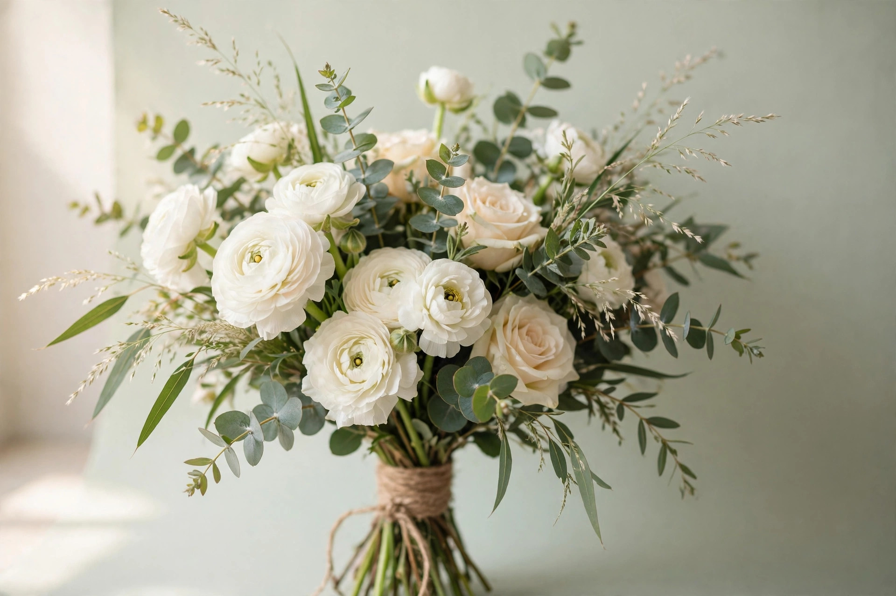

AI-genereret prøveSTILART #01 · UDFORSK KOMPOSITION
Morgendug
Morgendug — hvid og salviegrøn havebuket.
Havebuket af hvide ranunkler, salvie-eukalyptus og cremefarvede roser i blødt morgenvindueslys. En ren og lys buket til forårets første dage.
Endelig pris oplyses altid, før vi binder.